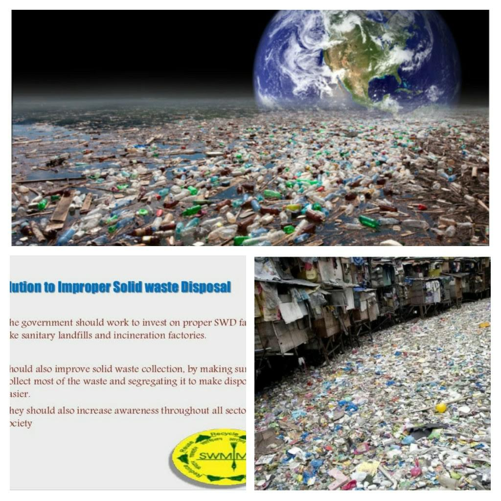

Collage of Problem, Effects, and Solution

Solution Summary
Solving these waste disposal problems requires a large-scale effort directly from the source, meaning manufacturers need to take responsibility for their waste by operating in a circular economy as much as possible. However, individuals can also play a role in the circular economy by seeking to fix products they currently own rather than throw them out. Municipal governments can also do their share by expanding the types of recyclables that can be handled by local recycling facilities.
Features of the Solution
Landfills can also take responsibility by actively sorting through trash and reclaiming recyclable materials. This can free up room in landfills for materials that truly cannot be recycled or used in any other way. Landfill managers should also look at embracing technology to create what is known as a bioreactor landfill, which creates optimal conditions for bacteria to feast on the waste and break it down.
When it comes to toxic waste, the current solution involves sealing the waste in leach-proof containers and burying it underground. However, technology allows some hazardous waste to be chemically treated so that it converts into a safer substance. Doing so should remain a priority.
Benefits of the Solution
This characteristic of waste management includes specifically the recycling aspect. As recycling of waste helps in reducing the cutting down of trees. This cutting of trees is mainly done for the production of paper.
By using this method, we can use recycled waste to make quality papers rather than relying on trees. Also, recycling needs only a minimal amount of energy for utilization and complete processing. The resultant product we obtain is a renewable source of energy and is eco-friendly.